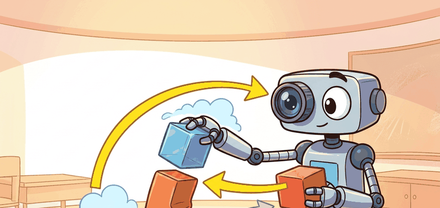

"A grasp starts as a perceptual claim."
A Systems Calibration Log

Manipulation perception is not generic scene understanding. It is perception tuned to the action question: what can be reached, grasped, pushed, inserted, or recovered from now?
This section defines the perception outputs manipulation actually needs: 6D pose, graspable surfaces, free-space channels, occlusion estimates, contact normals, and uncertainty fields.
Those outputs bridge vision models and control. The main lesson is that manipulation perception should be judged by action utility under uncertainty, not by static detection scores alone.
A detector that names an object but misses the stable grasp surface is less useful than a narrower model that exposes exactly the geometry the controller needs.
Theory
Perception for manipulation is a structured estimation problem. The latent state includes object identity, object pose, free space, support relation, graspable contact patches, and confidence in each estimate.
The useful error metric is therefore downstream: how much does state uncertainty change grasp ranking, collision risk, or recovery timing? Manipulation perception is only good if the wrong estimate would actually change what the robot does.
$$ p(g \mid I, D) \propto \int p(g \mid x_o)\,p(x_o \mid I, D)\,dx_o,\qquad \hat g = \arg\max_g \mathbb{E}_{x_o}[Q(g, x_o)] - \beta\,\mathrm{Var}_{x_o}[Q(g, x_o)] $$
The system builds pose and affordance hypotheses from RGB-D or point clouds, propagates uncertainty into grasp or motion scoring, and prefers actions whose expected value stays strong under plausible pose error. That is the real bridge between perception and manipulation robustness.
- Estimate object pose, support relation, and candidate grasp surfaces from the sensor stream.
- Quantify uncertainty or ambiguity, especially under occlusion or clutter.
- Propagate uncertainty into grasp or motion scores rather than selecting from a single point estimate.
- Trigger active perception or viewpoint change when top actions are too sensitive to state error.
Worked Example
# Penalize grasps whose score is too sensitive to pose uncertainty.
grasps = [
{"id": "g1", "mean_q": 0.86, "var_q": 0.07},
{"id": "g2", "mean_q": 0.81, "var_q": 0.01},
{"id": "g3", "mean_q": 0.75, "var_q": 0.03},
]
beta = 1.5
scored = []
for g in grasps:
robust = round(g["mean_q"] - beta * g["var_q"], 3)
scored.append((g["id"], robust))
scored.sort(key=lambda row: row[1], reverse=True)
print(scored)Expected output: The expected ranking promotes the lower-variance candidate. That is the right behavior when manipulation failure is expensive and ambiguity can be reduced later by active sensing.
OpenCV and modern RGB-D stacks cover calibration, while SAM 2, point-cloud libraries, and grasp scorers can propose object geometry. The missing step many systems omit is uncertainty propagation into action choice.
Practical Recipe
- Calibrate multi-camera and robot frames before measuring pose quality.
- Store grasp or affordance scores together with uncertainty, not as naked logits.
- Use the same object ids across segmentation, pose estimation, and planner logs.
- Add active perception motions when the top action depends strongly on occluded geometry.
- Evaluate perception with action-conditioned metrics such as reachable grasp success or collision-free lift rate.
Static detection accuracy can hide manipulation failure. A model may classify every object correctly and still place the end effector on the wrong side of a handle or behind an occluder.
In cluttered bin picking, the most valuable prediction is often not the class label but the free-space corridor that lets the wrist approach without collision.
Manipulation perception is the rare vision problem where seeing slightly less of the object can still be fine if you see the only face the gripper actually needs.
Current work is moving toward 3D foundation models, affordance fields, and open-vocabulary manipulation perception. The enduring systems question remains how to convert those rich features into stable action choices under uncertainty.
If the top grasp changes under a 5 millimeter pose perturbation, would your system notice before acting?
A strong teaching move is to contrast image-centric and action-centric evaluation. Image metrics care about masks and classes; manipulation metrics care about whether the same estimate leads to a stable approach, grasp, and recovery policy.
Perception for manipulation is also a natural entry point for active sensing. If the robot can move the wrist or camera to shrink uncertainty on the top-ranked grasp, the perception system has already become a planner partner rather than a frozen upstream block.
| Tool or Library | Role in the Topic | Builder Advice |
|---|---|---|
| OpenCV calib3d | Calibration and geometry | Use it to make frame accuracy boring and reliable before experimenting with fancy models. |
| SAM 2 or instance segmentation models | Object and contact-surface masks | Useful for clutter, but tie masks to action-conditioned downstream checks. |
| Point-cloud libraries | 3D geometry extraction | Use them to compute graspable surfaces, normals, and free-space corridors. |
Collect five cluttered RGB-D scenes, estimate two candidate grasps per target, and show how uncertainty-aware ranking changes the selected grasp in at least one case.
If the chosen action was bad, ask whether the state estimate was wrong, the uncertainty was ignored, or the planner consumed the estimate incorrectly. Manipulation perception failures often live at those interfaces.
Section References
Official calibration and geometric-estimation reference.
Current segmentation system often used in open-world manipulation perception stacks.
Isaac ROS Visual SLAM and perception stack
Official NVIDIA reference for practical perception integration into robot pipelines.
Perception for manipulation should expose action-relevant geometry and uncertainty, not just object identity.
Define one action-conditioned metric for a manipulation perception stack and explain why mAP alone would miss the same failure.